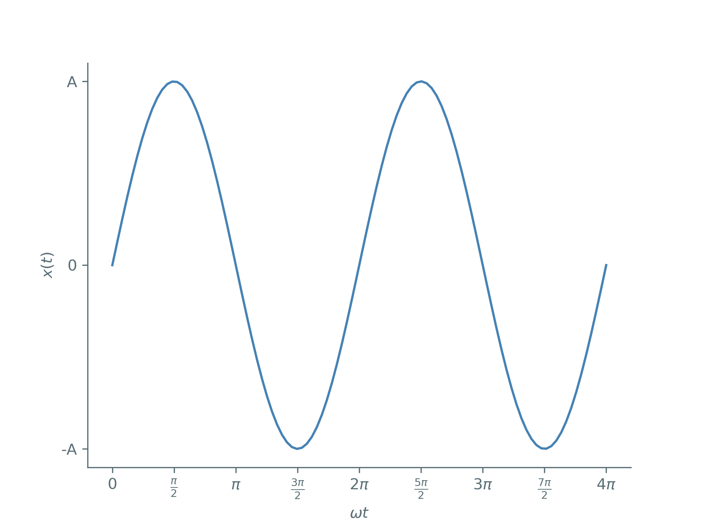
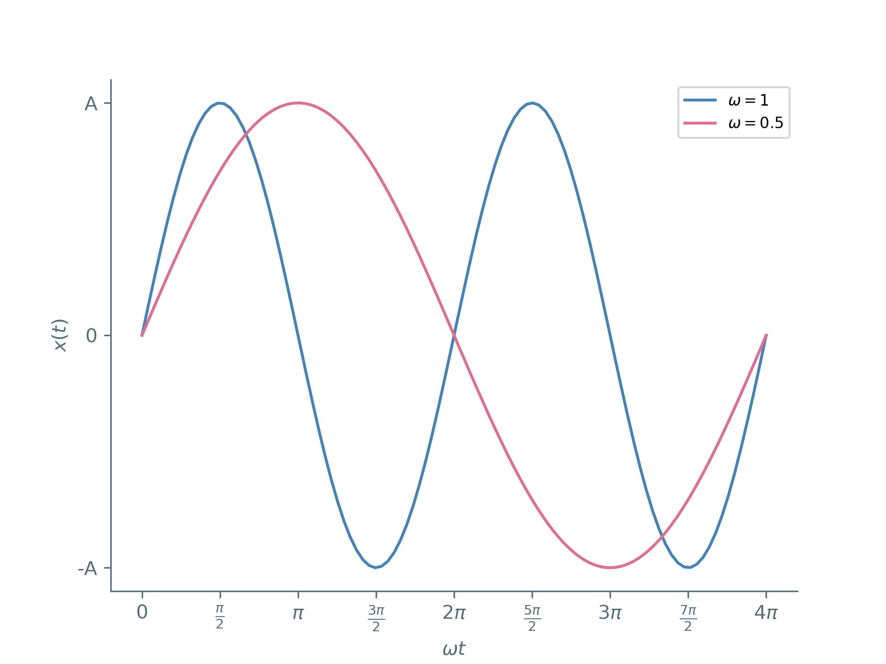
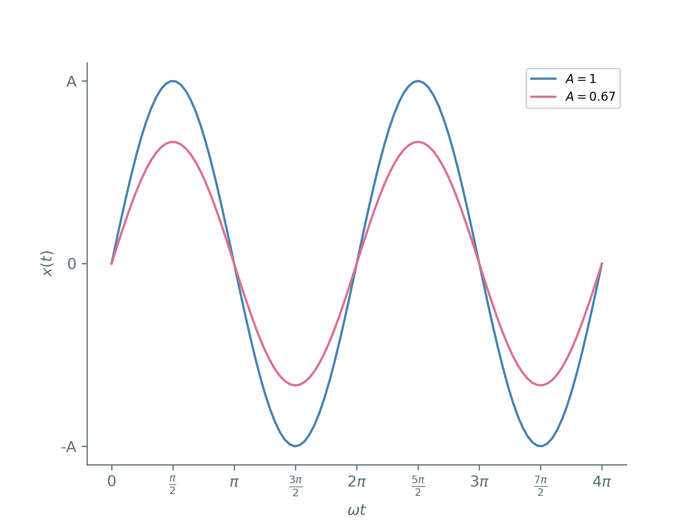
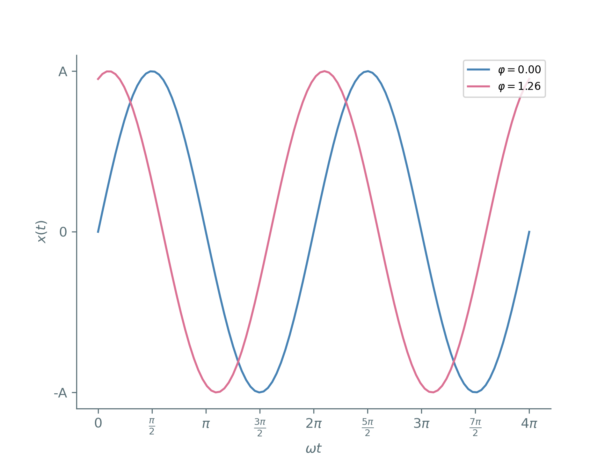
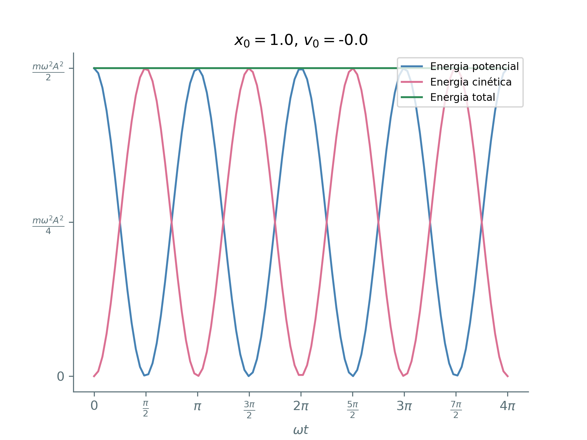
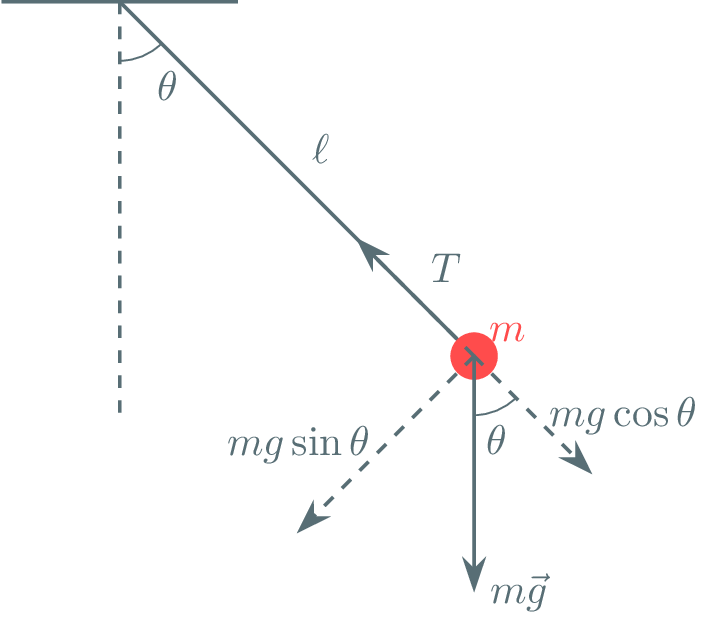
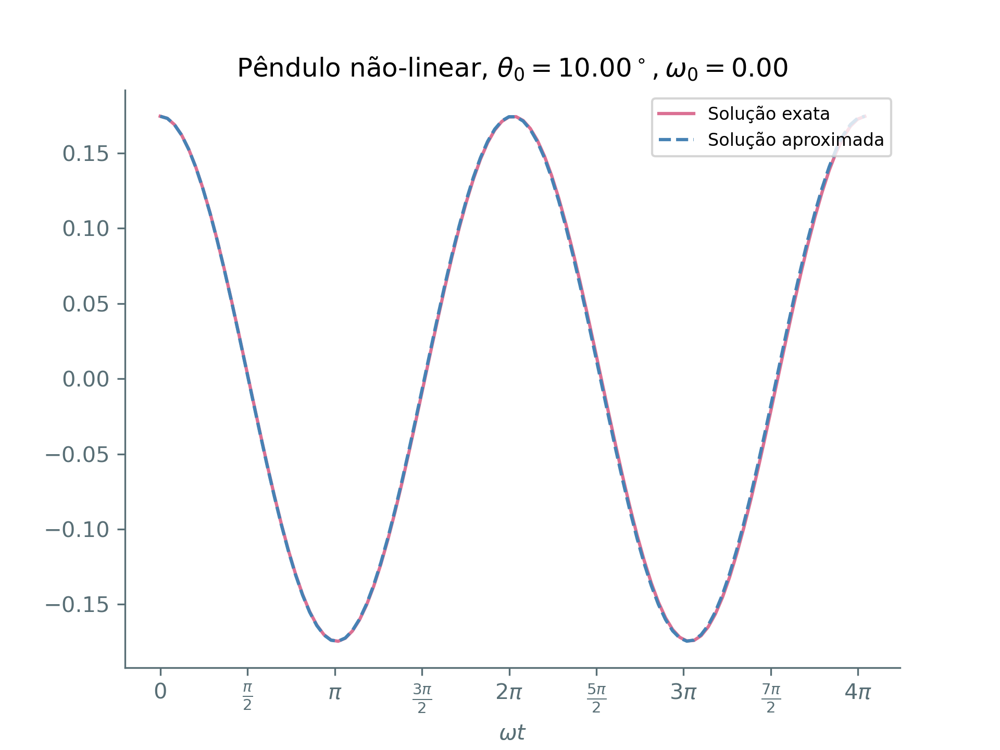
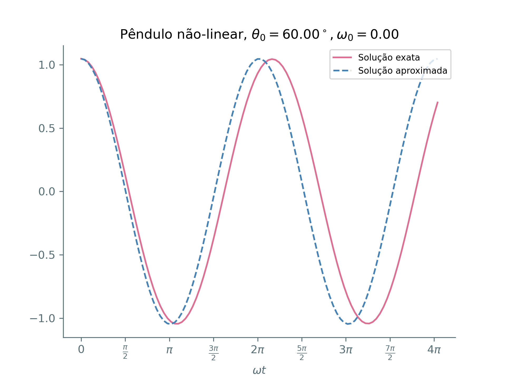
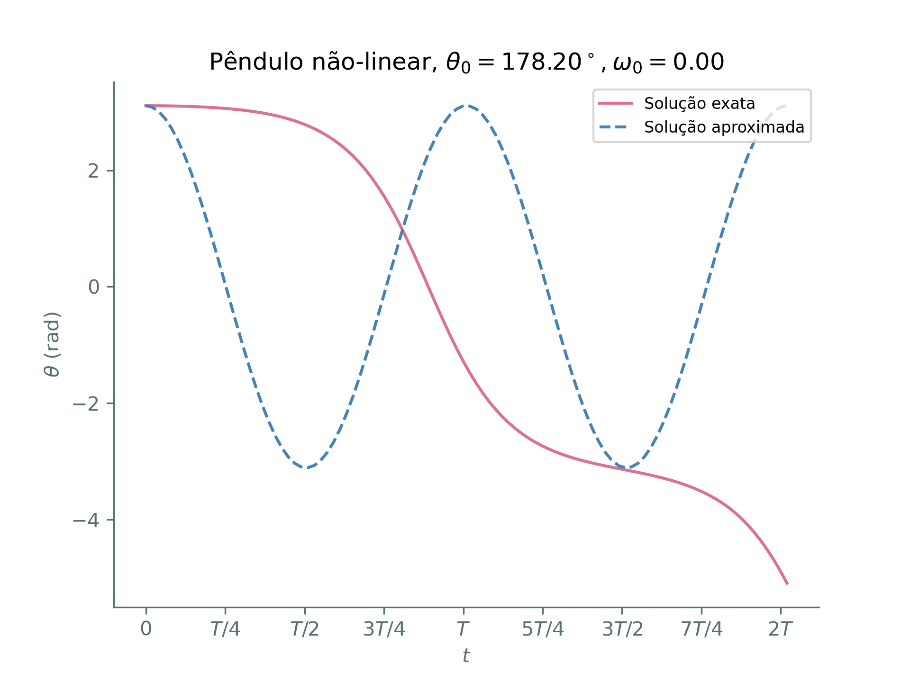

Oscilador Harmônico Simples
Nícolas Morazotti
2025/01/28 Ter
Exemplos
Relógio de pêndulo
\(T=2\pi \sqrt{\frac{\ell}{g}}\)
Circuitos RLC

Ponte do Estreito de Tacoma
Oscilações resultam do fenômeno flutter aeroelástico. Billah, K.; R. Scanlan (1991).
O movimento harmônico simples
Sistema

Sistema
- \(F = ma = -kx\)

Sistema
- \(F = ma = -kx\)
- \( m\ddot{x} + kx = 0 \)
- \(\ddot{x} + \frac{k}{m}x= 0\)
Solução
- \(\ddot{x} + \frac{k}{m}x= 0\)
- \(x(t) = \cos \left( \sqrt{\frac{k}{m}}t \right)\)?
- \(x(t) = \sin \left( \sqrt{\frac{k}{m}}t \right)\)?
Solução
- \(\ddot{x} + \frac{k}{m}x= 0\)
- \(x(t) = \alpha\cos \left( \sqrt{\frac{k}{m}}t \right) + \beta\sin\left( \sqrt{\frac{k}{m}}t \right)\)
Constantes do sistema
Frequência
\(\omega\) é chamada de frequência natural de oscilação.
Depende somente de propriedades da massa e da mola. \(x(t) = \alpha \cos(\omega t) + \beta \sin(\omega t)\)
Harmônico
- O movimento é dito harmônico \(\leftrightarrow \omega\) não depende do tempo.
- Uma mola muito distendida ou um pêndulo que inicia numa posição muito alta descrevem movimentos oscilatórios, mas não harmônicos.
Período
- \(x(t) = \alpha \cos(\omega t) + \beta \sin(\omega t)\)
- \(x \left( t + \frac{2\pi}{\omega} \right) = \alpha \cos \left[\omega \left( t + \frac{2\pi}{\omega} \right) \right]+ \beta \sin\left[\omega \left( t + \frac{2\pi}{\omega} \right) \right]\)
- \(x \left( t + \frac{2\pi}{\omega} \right) = \alpha \cos \left(\omega t + 2\pi \right)+ \beta \sin\left(\omega t + 2\pi \right)\)
- \(x \left( t + \frac{2\pi}{\omega} \right) = \alpha \cos \left(\omega t \right)+ \beta \sin\left(\omega t\right)\)
- \(x \left( t + \frac{2\pi}{\omega} \right) = x(t)\)
Período
- \(x(t) = \alpha \cos(\omega t) + \beta \sin(\omega t)\)
- \(T\equiv \frac{2\pi}{\omega}\) é chamado de período de oscilação, e é o tempo que a massa leva entre chegar na mesma posição com mesma velocidade.


Constantes arbitrárias
Para identificar \(\alpha \) e \(\beta \), precisamos das condições iniciais. Segunda ordem \(\leftrightarrow\) duas condições.
Constantes arbitrárias
- Sejam \(x(0) = x_0\), \(\dot{x}(0) = v_0\).
- \(x(t) = \alpha \cos(\omega t) + \beta \sin(\omega t)\)
- \(x(0) = \alpha \cos(0) + \beta \sin(0)\)
- \(x_0 = \alpha\)
Constantes arbitrárias
- Sejam \(x(0) = x_0\), \(\dot{x}(0) = v_0\).
- \(x(t) = x_0 \cos(\omega t) + \beta \sin(\omega t)\)
- \(\dot{x}(t) = -x_0\omega \sin(\omega t) + \beta\omega \cos(\omega t)\)
- \(\dot{x}(0) = -x_0\omega \sin(0) + \beta\omega \cos(0)\)
- \(v_0 = \beta\omega\)
\(x(t) = x_0 \cos(\omega t) + \frac{v_0}{\omega}\sin(\omega t)\)
Expressão alternativa
Amplitude e Fase
Há uma maneira mais instrutiva e compacta de escrever a solução.
- \(x(t) = \alpha \cos(\omega t) + \beta \sin(\omega t)\)
Amplitude e Fase
- \(x(t) = \alpha \cos(\omega t) + \beta \sin(\omega t)\)
- \(x(t) = \frac{\sqrt{\alpha ^2+\beta ^2}}{\sqrt{\alpha ^2+\beta ^2}}\cdot\left[ \alpha \cos(\omega t) + \beta \sin(\omega t) \right]\)
- \(x(t) = \sqrt{\alpha ^2+\beta ^2} \left[ \frac{\alpha}{\sqrt{\alpha^2+\beta^2}} \cos(\omega t) + \frac{\beta}{\sqrt{\alpha ^2+\beta ^2}} \sin(\omega t) \right]\)
Amplitude e Fase
- \(x(t) = \sqrt{\alpha ^2+\beta ^2} \left[ \frac{\alpha}{\sqrt{\alpha^2+\beta^2}} \cos(\omega t) + \frac{\beta}{\sqrt{\alpha ^2+\beta ^2}} \sin(\omega t) \right]\)
- \(A \equiv \sqrt{\alpha ^2+\beta ^2}\)
- \(x(t) = A \left[ \frac{\alpha}{A} \cos(\omega t) + \frac{\beta}{A} \sin(\omega t) \right]\)
- \(\left( \frac{\alpha}{A} \right)^2 + \left( \frac{\beta}{A} \right)^2 = \frac{\alpha^2 + \beta^2}{A^2} \equiv 1\)
Amplitude e Fase
- \(x(t) = A \left[ \frac{\alpha}{A} \cos(\omega t) + \frac{\beta}{A} \sin(\omega t) \right]\)
- \(\left( \frac{\alpha}{A} \right)^2 + \left( \frac{\beta}{A} \right)^2 = \frac{\alpha^2 + \beta^2}{A^2} \equiv 1\)
- \(\frac{\alpha}{A} = \cos(\varphi),\frac{\beta}{A} = -\sin(\varphi)\)
Amplitude e Fase
- \(x(t) = A \left[ \cos(\varphi) \cos(\omega t) - \sin(\varphi) \sin(\omega t) \right]\)
- \(x(t) = A \cos(\omega t + \varphi)\)
\(x(t) = A \cos(\omega t + \varphi)\)
\(x(t) = A \cos(\omega t + \varphi)\)
\(A\) é chamada de amplitude.

\(x(t) = A \cos(\omega t + \varphi)\)
\(\varphi\) é chamada de fase.

Energia do sistema
Energia
Podemos calcular a energia do sistema como
- \(E = \frac{m\dot{x}^2}{2} + \frac{kx^2}{2}\)
Energia
- \(E = \frac{m\dot{x}^2}{2} + \frac{kx^2}{2}\)
- \(\omega^2 = \frac{k}{m} \implies k = m\omega^2\)
- \(E = \frac{m\dot{x}^2}{2} + \frac{m\omega^2x^2}{2}\)
Energia
- \(E = \frac{m\dot{x}^2}{2} + \frac{m\omega^2x^2}{2}\)
- \(x(t) = A\cos(\omega t + \varphi)\)
- \(\dot{x}(t) = -\omega A\sin(\omega t + \varphi)\)
- \(E = \frac{m}{2}[-A\omega\sin(\omega t+\varphi)]^2 + \frac{m\omega^2}{2}[A\cos(\omega t + \varphi)]^2\)
Energia
- \(E = \frac{m}{2}[-A\omega\sin(\omega t+\varphi)]^2 + \frac{m\omega^2}{2}[A\cos(\omega t + \varphi)]^2\)
- \(E = \frac{m\omega^2A^2}{2} [\sin^2(\omega t+\varphi) + \cos^2(\omega t + \varphi)]\)
- \(E = \frac{m\omega^2A^2}{2}\)
Energia
- \(E = \frac{m\omega^2A^2}{2}\)
- \(A^2 = x_0^2 + \frac{v_0^2}{\omega^2} \implies E = \frac{mv_0^2}{2}+ \frac{m\omega^2x_0^2}{2} \)
- A energia se conserva.
Energia do oscilador harmônico

Pêndulo inextensível
Pêndulo inextensível

Pêndulo inextensível

Pêndulo inextensível

Pêndulo inextensível
- A tensão equilibra a componente radial: \(T = mg\cos\theta\)
- A força resultante é a componente perpendicular: \(ma = -mg\sin\theta\)
Pêndulo inextensível
- \(ma = -mg\sin\theta\)
- Aceleração linear perpendicular: \(m\ell\ddot{\theta} = -mg\sin\theta\)
- \(\ddot{\theta} + \frac{g}{\ell}\sin\theta = 0\)
Pêndulo inextensível
- \(\ddot{\theta} + \frac{g}{\ell}\sin\theta = 0\)
- Para pequenos ângulos, \(\sin\theta\approx\theta\)
- \(\ddot{\theta} + \frac{g}{\ell}\theta = 0\)
- Mesma equação do massa-mola: \(\ddot{x} + \frac{k}{m}x = 0\)
Pêndulo inextensível
Solução harmônica!
Pêndulo inextensível
Solução aproximada boa para ângulos pequenos!

Pêndulo inextensível
Solução exata diferere para ângulos grandes!

Pêndulo inextensível
Solução exata diferere para ângulos grandes!

Pêndulo inextensível
Solução exata diferere para ângulos grandes!